import re
import os
import nltk
import spacy
import string
import pprint
import random
import operator
# import powerlaw
import numpy as np
import collections
import pandas as pd
import numpy as np
import helper2 as h2
import networkx as nx
import seaborn as sns
# import pygraphviz as pgv
import matplotlib.cm as cm
from pylab import rcParams
from itertools import count
from itertools import islice
from tabulate import tabulate
from textblob import TextBlob
from nltk.stem.porter import *
from wordcloud import WordCloud
from operator import itemgetter
import matplotlib.pyplot as plt
from nltk.corpus import stopwords
import matplotlib.colors as mcolors
from numpy.random import default_rng
from matplotlib import pyplot, patches
from nltk.tokenize import word_tokenize
from timeit import default_timer as timer
from collections import defaultdict, Counter
from sklearn.metrics.pairwise import cosine_similarity
from scipy.sparse.csgraph import floyd_warshall, dijkstra
from gensim.models.doc2vec import Doc2Vec, TaggedDocument
from sklearn.feature_extraction.text import TfidfVectorizer
stemmer = PorterStemmer()
%matplotlib inline
%config InlineBackend.figure_format = 'retina'from IPython.core.display import HTML
HTML("""
<style>
.output_png {
display: table-cell;
text-align: center;
vertical-align: middle;
}
</style>
""")import nltk
nltk.download('punkt')
nltk.download('averaged_perceptron_tagger')
nltk.download('wordnet')
nltk.download('sentiwordnet')
nltk.download('stopwords')[nltk_data] Downloading package punkt to /home/yasaswi/nltk_data...
[nltk_data] Package punkt is already up-to-date!
[nltk_data] Downloading package averaged_perceptron_tagger to
[nltk_data] /home/yasaswi/nltk_data...
[nltk_data] Package averaged_perceptron_tagger is already up-to-
[nltk_data] date!
[nltk_data] Downloading package wordnet to /home/yasaswi/nltk_data...
[nltk_data] Package wordnet is already up-to-date!
[nltk_data] Downloading package sentiwordnet to
[nltk_data] /home/yasaswi/nltk_data...
[nltk_data] Package sentiwordnet is already up-to-date!
[nltk_data] Downloading package stopwords to
[nltk_data] /home/yasaswi/nltk_data...
[nltk_data] Unzipping corpora/stopwords.zip.Truefrom spacy.lang.en.stop_words import STOP_WORDS as scipy_stop
from nltk.corpus import stopwords as nltk_stop
from wordcloud import STOPWORDS as wc_stop
stop_words_list = []
stop_words_list.extend(list(scipy_stop))
stop_words_list.extend(list(nltk_stop.words('english')))
stop_words_list.extend(list(wc_stop))
# List of custom stop words
custom_stop_words = [
'well', 'would', 'never', 'latitude', 'longitude', 'wonderland', 'wonder', 'adventure', 'adventures', 'chapter',
'car','race','great','please', 'maam', 'drink', 'think', 'sink', 'come', 'foot', 'right', 'thats', 'too', 'itll',
'tell', 'table', 'long', 'ye', 'let', 'pandavas', 'tale', 'test', 'said', 'held', 'crab', 'next','men', 'sure',
'digging', 'i', 'i\'ve', 'oh', 'bills','battle','islandborn', 'number','thou','thy', 'unto','ill', 'im', 'ive',
'whats', 'read', 'little', 'id', 'look', 'dont', 'luckily', 'get', 'lizard', 'the', 'son', 'addressed',
'continued', 'thee', 'viz', 'diademdecked', 'king', 'word','words', 'beholding', 'sons', 'hath', 'great', 'brahmana',
'kuru', 'hear', 'slay', 'grandsire', 'krishnadwaipayana']
stop_words_list = list(set(stop_words_list))
stop_words_list += custom_stop_wordsdef read_file(filename, remove_stop_words = True, preprocess = True, return_type = list):
"""
This function reads content from given file and does preprocessing
and stop words removal as decided by the parameters.
Parameters
----------
filename : str
Path to the file location
remove_stop_words : bool
A boolean value that dictates if stop words should be removed.
preprocess : bool
A boolean value that dictates if preprocessing should be done.
Characters like carriage return, linefeed, form feed and punctuation
will be removed
return_type : type
Decides if the return is a list of sentences or a paragraph string
Returns
----------
contents : list or str
Returns preprocessed contents either as a list of sentences
or as a whole string which is decided by return_type.
"""
contents = []
with open (filename, 'r' , encoding = 'utf-8') as f:
for l in f:
line = l.lower().strip()
if line.strip():
line = line.replace('\n', ' ').replace('\r', ' ').replace('\'s', '').replace('\'', '')
if preprocess == True:
line = ''.join([char for char in line if char not in string.punctuation]) # Removing Punctuations
if remove_stop_words == True:
line = ' '.join([word for word in line.split() if word.lower() not in stop_words_list])
for key_name, aliases in h2.same_names_dict.items():
for alias in aliases:
line = re.sub(r"\b{}\b".format(alias), key_name, line)
contents.append(line)
if return_type == str:
return ' '.join(contents)
else:
return contentsdef get_interactions(contents, character_list, N = 15):
"""
This function outputs a character interaction dictionary - a opmised version of a co-occurance matrix
Parameters
----------
contents : str
Paragraph from which character interactions are to be extracted
character_list : bool
A boolean value that dictates if stop words should be removed.
N : bool
Decides the maximum distance(in words) between two character names
to consider a valid interaction
Returns
----------
res : dict
Dictionary with character pairs as keys and no. of interactions as values
"""
res = defaultdict(int)
word_list = contents.split(' ')
for index, word in enumerate(word_list):
if word in character_list:
try:
interaction_list = word_list[index : index + N + 1]
except:
pdb.set_trace()
for character in character_list:
if character!=word:
if character in interaction_list:
key = tuple(sorted([character, word]))
res[key]+=1
return res# Co-occurance if interaction is present in 15 words
def get_graph_from_file(contents):
"""
This function derives a network using character interaction/ co-occurance dictionary
based on the contents string provided
Parameters
----------
contents : str
Paragraph from which character interactions are to be extracted
Returns
----------
G : graph
A NetworkX graph
"""
character_list = h2.all_characters
res = get_interactions(contents, character_list, N = 15)
co_occurance_list = list([(*k,v) for (k,v) in res.items()])
G=nx.Graph()
G.add_nodes_from(character_list)
G.add_weighted_edges_from(co_occurance_list)
isolates = list(nx.isolates(G))
G.remove_nodes_from(isolates)
return Gdef get_top_n_central_nodes(centrality_dict, top_n = 5):
"""
This function returns the top n central nodes along
with their centrality values
Parameters
----------
centrality_dict : dict
Dictionary with centrality values of characters
top_n : int
No of top cental nodes to be returned
Returns
----------
top_nodes : list
A list of top nodes and their centrality values
"""
top_nodes = [str(k) + ': ' + str(round(v, 4)) for k, v in sorted(centrality_dict.items(), key = lambda x : x[1],
reverse = True )[:top_n]]
return top_nodes
def get_top_n_central_nodes_without_values(centrality_dict, top_n = 5):
"""
This function returns the top n central nodes
Parameters
----------
centrality_dict : dict
Dictionary with centrality values of characters
top_n : int
No of top cental nodes to be returned
Returns
----------
top_nodes : list
A list of top nodes without centrality values
"""
top_nodes = [str(k) for k, v in sorted(centrality_dict.items(), key = lambda x : x[1], reverse = True )[:top_n]]
return top_nodes
def get_central_actors(G, top_n = 5, with_values = False):
"""
This function gets the list of top n central nodes using
various centrality measures
Parameters
----------
G : graph
A NetworkX graph
top_n : int
No of top cental nodes to be returned
with_values : bool
A boolean value that decides if the centrality values should also
be displayed
"""
numbers = range(1, top_n+1)
centralities = ['#', 'Betweenness', 'Degree', 'Pagerank', 'closeness']
eig_dict = nx.eigenvector_centrality(G)
deg_dict = nx.degree_centrality(G)
pag_dict = nx.pagerank(G)
bet_dict = nx.betweenness_centrality(G)
close_dict = nx.closeness_centrality(G)
if with_values == True:
bet_top = get_top_n_central_nodes(bet_dict, top_n)
deg_top = get_top_n_central_nodes(deg_dict, top_n)
pag_top = get_top_n_central_nodes(pag_dict, top_n)
close_top = get_top_n_central_nodes(close_dict, top_n)
print(tabulate(np.c_[numbers, bet_top ,deg_top, pag_top, close_top], headers = centralities))
else:
bet_top = get_top_n_central_nodes_without_values(bet_dict, top_n)
deg_top = get_top_n_central_nodes_without_values(deg_dict, top_n)
pag_top = get_top_n_central_nodes_without_values(pag_dict, top_n)
# eig_top = get_top_n_central_nodes(eig_dict, top_n)
close_top = get_top_n_central_nodes_without_values(close_dict, top_n)
print(tabulate(np.c_[numbers, bet_top ,deg_top, pag_top, close_top], headers = centralities))
def take(n, iterable):
"Return first n items of the iterable as a list"
return dict(islice(iterable, n))from pathlib import Path
file_path = Path.cwd() / "Mahabharata/Mahabharata-K.M.Ganguli.txt"contents = read_file(file_path, remove_stop_words = True, preprocess = True, return_type = str)
Gx = get_graph_from_file(contents)Let us look at the basic statistics of the Graph that we have just created
print(f"No of actors(nodes) in the Graph are {len(Gx.nodes)}")
print(f"No of ties(edges) in the Graph are {len(Gx.edges)}")
print(f"Avg Shortest Path Length is {nx.average_shortest_path_length(Gx)}")
print(f"Avg Clustering Coefficient is {nx.average_clustering(Gx)}")
print(f"Transitivity of the Graph is {nx.transitivity(Gx)}")
print(f"Avg Node Connectivity is {nx.average_node_connectivity(Gx)}")
print(f"Max. distance b/w any pair of nodes (Diameter) is {nx.diameter(Gx)}")
print(f"Radius of the Graph is {nx.radius(Gx)}")No of actors(nodes) in the Graph are 154
No of ties(edges) in the Graph are 2728
Avg Shortest Path Length is 1.8354978354978355
Avg Clustering Coefficient is 0.6742193417994761
Transitivity of the Graph is 0.5279993758411515
Avg Node Connectivity is 19.93472540531364
Max. distance b/w any pair of nodes (Diameter) is 4
Radius of the Graph is 2n = 10
get_central_actors(Gx, top_n = n, with_values = False) # Betweenness Degree Pagerank closeness
--- ------------- ------------ ------------- ------------
1 krishna krishna krishna krishna
2 yudhishthira yudhishthira arjuna yudhishthira
3 arjuna arjuna yudhishthira arjuna
4 karna bhima bhima bhima
5 bhima duryodhana drona duryodhana
6 duryodhana karna karna karna
7 vaisampayana bhishma bhishma bhishma
8 bhishma kunti duryodhana kunti
9 kunti drona dhritarashtra drona
10 drona vaisampayana vaisampayana vaisampayanan = 10
get_central_actors(Gx, top_n = n, with_values = True) # Betweenness Degree Pagerank closeness
--- -------------------- -------------------- -------------------- --------------------
1 krishna: 0.1271 krishna: 0.8627 krishna: 0.0249 krishna: 0.8743
2 yudhishthira: 0.0659 yudhishthira: 0.7582 yudhishthira: 0.0206 yudhishthira: 0.801
3 arjuna: 0.0552 arjuna: 0.7582 arjuna: 0.0199 arjuna: 0.801
4 karna: 0.0391 bhima: 0.6863 bhima: 0.0177 bhima: 0.7574
5 bhima: 0.0358 duryodhana: 0.6863 duryodhana: 0.0177 duryodhana: 0.7537
6 duryodhana: 0.0328 karna: 0.6601 karna: 0.0171 karna: 0.7391
7 vaisampayana: 0.0289 bhishma: 0.6471 bhishma: 0.0166 bhishma: 0.7356
8 bhishma: 0.028 kunti: 0.6275 kunti: 0.0161 kunti: 0.7251
9 kunti: 0.0263 drona: 0.6144 vaisampayana: 0.0161 drona: 0.7183
10 drona: 0.024 vaisampayana: 0.6144 drona: 0.0156 vaisampayana: 0.7183# from pyvis.network import Network
# net = Network(notebook = True, width="1000px", height="700px", bgcolor='#222222', font_color='white')
# node_degree = dict(Gx.degree)
# #Setting up node size attribute
# nx.set_node_attributes(Gx, node_degree, 'size')
# net.from_nx(Gx)
# net.show("witcher.html")# def draw(G, pos, measure, measure_name, color):
# """
# This function draws a network based on a specific metric in the color and a specified layout
# Parameters
# ----------
# G : graph
# A NetworkX graph
# pos : dictionary,
# A dictionary with nodes as keys and positions as values.
# measure : dictionary
# Results of the centrality measure
# measure_name: str
# Name of the centrality measure used
# """
# # Get the influencer node from measure
# influencer_node_index = max(enumerate(measure.values()), key = operator.itemgetter(1))[0]
# influencer_node = list(measure.keys())[influencer_node_index]
# # Plot the graph
# plt.figure(figsize=(180, 180))
# # Draw the nodes
# nodes = nx.draw_networkx_nodes(G, pos, node_size = np.array(list(measure.values()))*80000, cmap = color,
# node_color = np.array(list(measure.values()))*80000,
# nodelist = list(measure.keys()), alpha = 0.4)
# # Draw Influencer Node with size = 800
# # nx.draw_networkx_nodes(G, pos, node_size = 800, node_color = 'darkGreen', nodelist= [influencer_node])
# # Draw the edges
# edges = nx.draw_networkx_edges(G, pos, edge_color = 'gray', alpha = 0.3)
# # Draw label only for the influencer node
# # nx.draw_networkx_labels(G, pos, font_size = 40, labels = {influencer_node: str(influencer_node)},font_color = 'red')
# nx.draw_networkx_labels(G, pos, font_size = 130, font_color = 'black')
# plt.title(measure_name, size = 80, weight = 'bold')
# plt.axis('off')
# plt.tight_layout()
# # plt.savefig('network_visualisation.jpg')
# plt.show()# page_rank = nx.degree_centrality(Gx)
# page_rank_results = dict(sorted(page_rank.items(), key = lambda item: item[1], reverse = True))
# pos = nx.spring_layout(Gx, k = 3)
# draw(Gx, pos, page_rank_results, 'Degree Centrality', plt.cm.Reds)# page_rank = nx.pagerank(Gx, alpha = 0.85)
# page_rank_results = dict(sorted(page_rank.items(), key = lambda item: item[1], reverse = True))
# pos = nx.spring_layout(Gx, k = 2)
# draw(Gx, pos, page_rank_results, 'Page Rank Centrality', plt.cm.Reds )Calculate and plot Ego network of top 15 characters in the Epic
def plot_influencers(G, N = 10):
"""
This function plots the top-n influencers in a bar chart
Parameters
----------
G : graph
A NetworkX graph
N : int
No of influencers to be plotted
"""
influence_dict = defaultdict(float)
for char in h2.all_characters:
if char in G.nodes:
influence_dict[char] = len(nx.ego_graph(G, n = char, radius = 1).nodes)
influence_dict = {k: v for k, v in sorted(influence_dict.items(), key=lambda item: item[1], reverse = True)}
plt.figure(figsize = (24, 15))
top_influences = take(N, influence_dict.items())
keys = [x.title() for x in top_influences.keys()]
vals = [top_influences[k.lower()] for k in keys]
percent = [round(float(top_influences[k.lower()]/len(influence_dict.keys()))*100,2) for k in keys]
labels = [f"{str(vals[i])} ({str(percent[i])}%)" for i in range(len(vals))]
labels = [f" {str(percent[i])}%" for i in range(len(vals))]
g = sns.barplot(x=keys, y=vals,palette = "Set1", alpha = 0.75)
g.bar_label(g.containers[0], labels = labels, size = 18)
g.tick_params(axis='x', which = 'major', labelsize = 25, rotation = 20)
g.tick_params(axis='y', which = 'major', labelsize = 25)
plt.title('Ego Network of top 15 Central Characters in Mahabharata', size = 25, y = 1.05)
plt.tight_layout()
plt.savefig('ganguly_influencers.jpg')
plt.show()
plot_influencers(Gx, 15)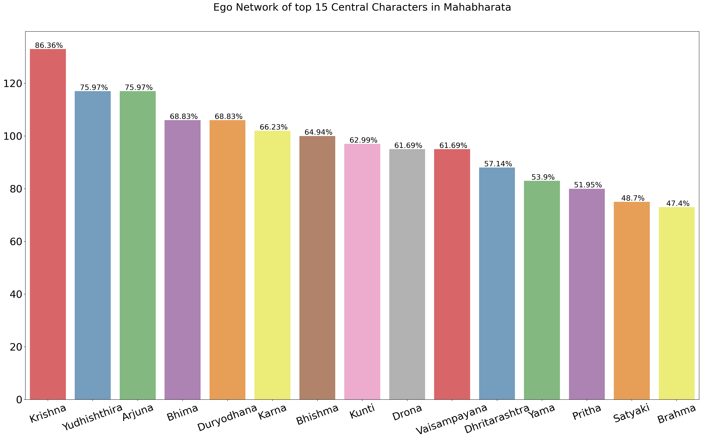
def plot_centrality(G, N = 15):
"""
This function gets the list of top n central nodes using
various centrality measures
Parameters
----------
G : graph
A NetworkX graph
N : int
No of influencers to be plotted
"""
fig, axes = plt.subplots(nrows = 2, ncols = 2, figsize=(25, 25))
fig.suptitle('Centrality Measures for Main Characters', size = 30, y = 1.05 )
ax = axes.flatten()
measures = [['Closeness Centrality', nx.closeness_centrality],
['Betweenness Centrality', nx.betweenness_centrality],
['Pagerank Centrality', nx.pagerank],
['Degree Centrality',nx.degree_centrality]]
for i in range(len(measures)):
ax[i].set_title(measures[i][0], size = 50)
centrality_dict = measures[i][1](G)
centrality_dict = {k: v for k, v in sorted(centrality_dict.items(), key=lambda item: item[1], reverse = True)}
plt.figure(figsize = (24, 9))
top_influences = take(N, centrality_dict.items())
keys = [x.title() for x in top_influences.keys()]
vals = [top_influences[k.lower()] for k in keys]
g = sns.barplot(y=keys, x=vals , palette = "Dark2", alpha = 0.75, ax = ax[i])
# g.set_yticklabels(keys, size = 15)
g.tick_params(axis='both', which='major', labelsize = 40)
# g.set_xticklabels(g.get_xticks()[::2], size = 15)
# g.set_xticklabels([str(i) for i in g.get_xticks()], fontsize = 15)
fig.tight_layout()
fig.savefig('ganguly_central_characters.jpg', )
fig.show()
plot_centrality(Gx, N = 5)UserWarning: Matplotlib is currently using module://matplotlib_inline.backend_inline, which is a non-GUI backend, so cannot show the figure.
fig.show()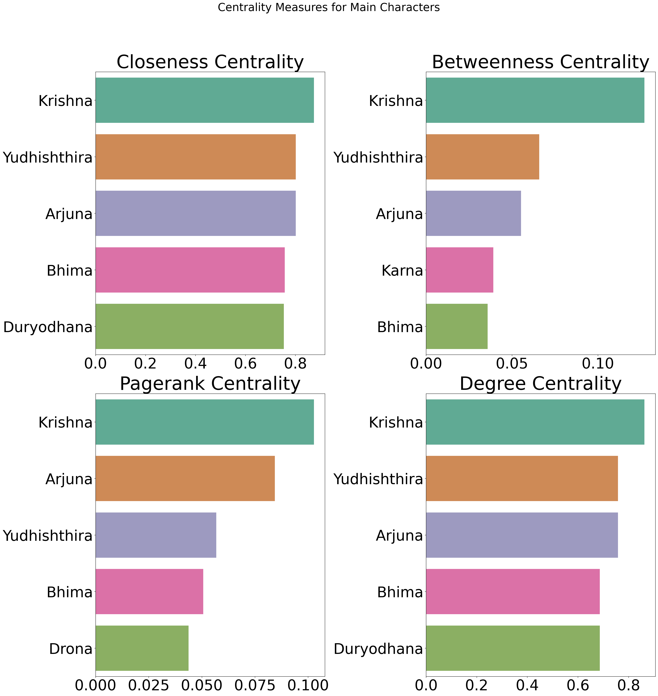
<Figure size 1728x648 with 0 Axes><Figure size 1728x648 with 0 Axes><Figure size 1728x648 with 0 Axes><Figure size 1728x648 with 0 Axes>file_mb_summary_1 = Path.cwd() / "Mahabharata/Mahabharata-C.Rajagopalachari.txt"
file_mb_summary_2 = Path.cwd() / "Mahabharata/Mahabharata-R.K.Narayan.txt"
file_mb_full_1 = Path.cwd() / "Mahabharata/Mahabharata-K.M.Ganguli.txt"
file_mb_full_2 = Path.cwd() / "Mahabharata/Mahabharata-Bibek_Debroy.txt"mahabharata_sentences = read_file(file_mb_full_1, remove_stop_words = True, return_type = list)from nltk.stem import WordNetLemmatizer
from nltk.corpus import wordnet
def lemmatize_word(word):
"""
This function returns the lemmatized word based on pos-tagging
Parameters
----------
word : str
word to be lemmatized
Returns
----------
lem_token : str
lemmatized word
"""
lemmatizer = WordNetLemmatizer()
lem_token = lemmatizer.lemmatize(word, pos=wordnet.NOUN)
# otherwise check for verb
if lem_token == word:
lem_token = lemmatizer.lemmatize(word, pos=wordnet.VERB)
# otherwise check for adjective
if lem_token == word:
lem_token = lemmatizer.lemmatize(word, pos=wordnet.ADJ)
# otherwiese check for adverb
if lem_token == word:
lem_token = lemmatizer.lemmatize(word, pos=wordnet.ADV)
return lem_tokenLet us plot word clouds to find out words which describe our top central characters
main_characters = ['krishna', 'arjuna', 'yudhishthira', 'duryodhana']# Extract all the sentences where the name of each character is mentioned
character_related_sentences = defaultdict(list)
for index,sentence in enumerate(mahabharata_sentences):
sentence = ' '.join([lemmatize_word(w) for w in sentence.split()])
for character in main_characters:
if character in sentence:
character_related_sentences[character].append(sentence)
# character_related_sentences[character].append(mahabharata_sentences[index+1])
# character_related_sentences[character].append(mahabharata_sentences[index+2])
character_related_sentences[character] = list(set(character_related_sentences[character]))def plot_wordclouds(character_related_sentences, main_characters):
"""
This function plots word clouds of main characters
Parameters
----------
character_related_sentences : dict
dictionary with keys as names of characters and values as list of sentences where the name
of the character is mentioned
main_characters : list
characters of interest whose words clouds are to be plotted
"""
for character in main_characters:
character_str = ' '.join(character_related_sentences[character])
wordcloud = WordCloud(width= 3000, height = 2000, random_state=1,
background_color='black', colormap='Accent',
collocations=False, stopwords = stop_words_list + h2.all_characters_unedited
+ h2.all_characters + custom_stop_words).generate(character_str)
plt.figure(figsize=(15, 10))
plt.imshow(wordcloud)
plt.axis("off")
plt.savefig(f"Word Cloud {character}.jpg")
plt.title(character.title(), size = 80)
plt.show()
plot_wordclouds(character_related_sentences, main_characters)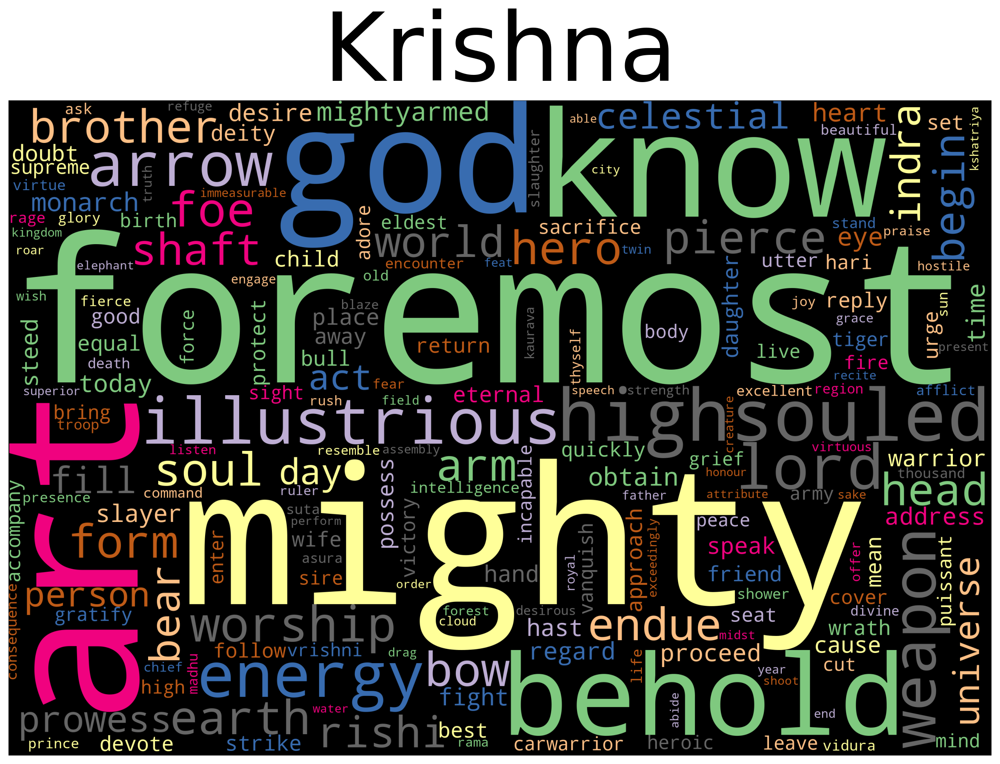
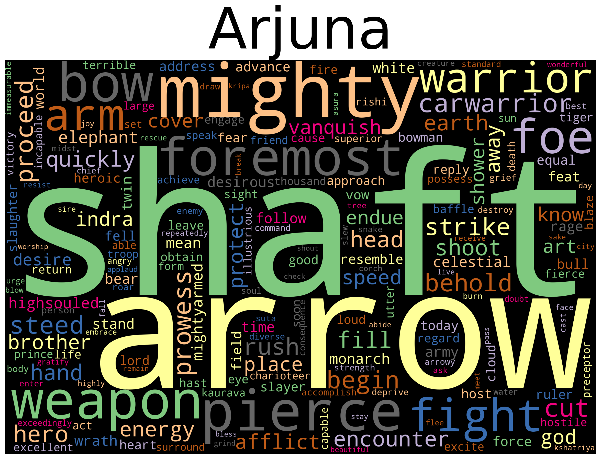
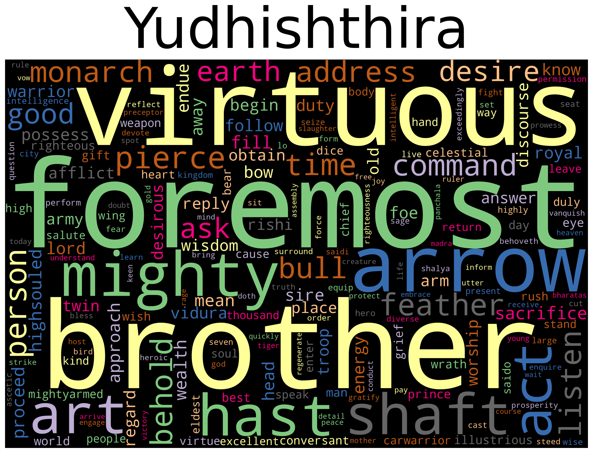
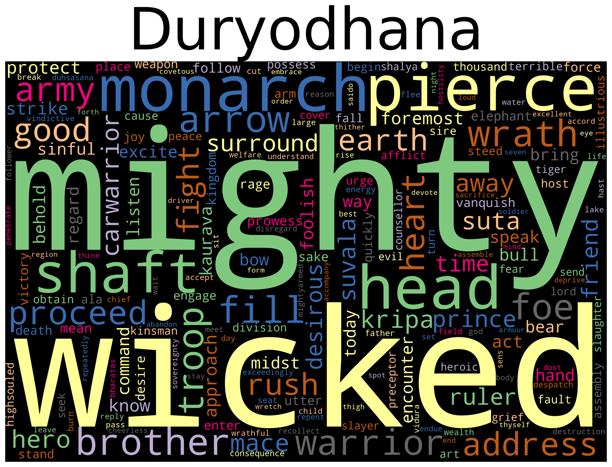
Text Similarity Analysis
Similarity between various translations
# Read four various translations of the epic in str and list formats
mb_summary_1_list = read_file(file_mb_summary_1, preprocess = True, remove_stop_words = True, return_type = list)
mb_summary_2_list = read_file(file_mb_summary_2, preprocess = True, remove_stop_words = True, return_type = list)
mb_full_1_list = read_file(file_mb_full_1, preprocess = True, remove_stop_words = True, return_type = list)
mb_full_2_list = read_file(file_mb_full_2, preprocess = True, remove_stop_words = True, return_type = list)
mb_summary_1_str = read_file(file_mb_summary_1, preprocess = True, remove_stop_words = True, return_type = str)
mb_summary_2_str = read_file(file_mb_summary_2, preprocess = True, remove_stop_words = True, return_type = str)
mb_full_1_str = read_file(file_mb_full_1, preprocess = True, remove_stop_words = True, return_type = str)
mb_full_2_str = read_file(file_mb_full_2, preprocess = True, remove_stop_words = True, return_type = str)# Print the similarity matrix that depicts similarities between all the translations
vectorizer = TfidfVectorizer()
tfidf = vectorizer.fit_transform([mb_full_1_str, mb_full_2_str, mb_summary_1_str, mb_summary_2_str])
similarity = np.round(cosine_similarity(tfidf),2)
numbers = ['Full T1', 'Full T2', 'Summary T1', 'Summary T2']
centralities = ['Book', 'Full T1', 'Full T2', 'Summary T1', 'Summary T2']
print(tabulate(*[np.c_[numbers, similarity*100]], headers = centralities))Book Full T1 Full T2 Summary T1 Summary T2
---------- --------- --------- ------------ ------------
Full T1 100 62 62 44
Full T2 62 100 58 42
Summary T1 62 58 100 63
Summary T2 44 42 63 100def plot_similarity(similarity_matrix):
"""
This function plots the similarity in a bar chart format
Parameters
----------
similarity_matrix : list
list of similarity values
"""
fig, axes = plt.subplots(nrows = 1, ncols = 4, figsize=(25, 8))
ax = axes.flatten()
fig.suptitle('Text Similarity comparison using tf-idf and cosine similarity', size = 30, y = 1.05 )
book_names = np.array(['Ganguly', 'Bibek', 'Rajagopalachari', 'Narayanan'])
for i in range(len(similarity_matrix)):
ax[i].set_title(f'{book_names[i]}', size = 20)
plt.figure(figsize = (24, 9))
indices = list(range(4))
indices.pop(i)
vals = similarity_matrix[i][indices]
rank = vals.argsort().argsort()
keys = book_names[indices]
color_palette = np.array(sns.color_palette("Blues", len(vals)))
g = sns.barplot(y=keys, x=vals, palette = color_palette[rank], alpha = 0.75, ax = ax[i])
g.bar_label(g.containers[0], labels = vals, size = 14)
g.set_yticklabels(keys, size = 20)
g.tick_params(axis='both', which='major', labelsize = 20)
fig.tight_layout()
fig.savefig('all_texts_similarity.jpg', )
fig.show()
plot_similarity(similarity)/tmp/ipykernel_230/2508381481.py:29: UserWarning: Matplotlib is currently using module://matplotlib_inline.backend_inline, which is a non-GUI backend, so cannot show the figure.
fig.show()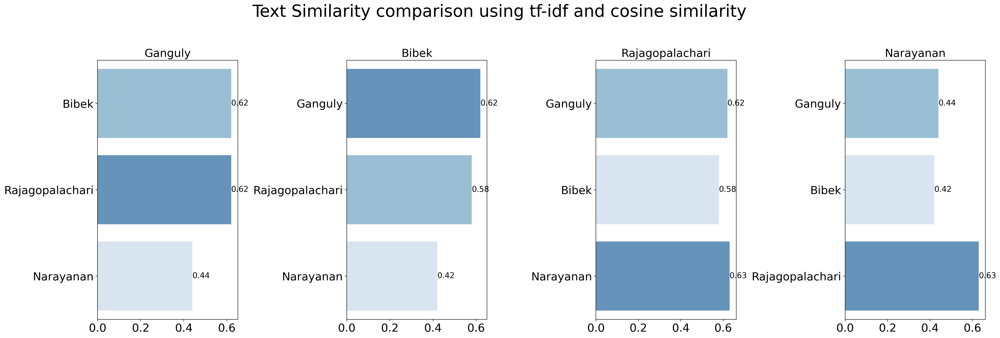
<Figure size 2400x900 with 0 Axes><Figure size 2400x900 with 0 Axes><Figure size 2400x900 with 0 Axes><Figure size 2400x900 with 0 Axes>Let us now find chapterwise similarity between two translations of the Epic
Ganguli (FT-1) vs Bibek (FT-2)
# Extract chapters from the Ganguli translation
import os
ganguli_chapters = dict()
file_mb_summary_1 = Path.cwd() / "Mahabharata/Mahabharata-C.Rajagopalachari.txt"
file_mb_summary_2 = Path.cwd() / "Mahabharata/Mahabharata-R.K.Narayan.txt"
file_mb_full_1 =
file_mb_full_2 = Path.cwd() / "Mahabharata/Mahabharata-Bibek_Debroy.txt"
ganguli = r"E:\Social Networks and Text Analytics\CA2\Mahabharata\ganguli"
for root, dirs, files in os.walk(ganguli, topdown=False):
for name in files:
if '.txt' not in name:
continue
t1 = read_file(os.path.join(root, name), remove_stop_words = True, return_type = list)
index = int(name.split('.')[0])
ganguli_chapters[index] = t1# Extract chapters from the Bibek translation
bibek_chapters = dict()
bibek = r"E:\Social Networks and Text Analytics\CA2\Mahabharata\bibek"
for root, dirs, files in os.walk(bibek, topdown=False):
for name in files:
if '.txt' not in name:
continue
t1 = read_file(os.path.join(root, name), remove_stop_words = True, return_type = list)
index = int(name.split('.')[0])
bibek_chapters[index] = t1def get_cosine_similarity(doc_list):
"""
This function plots the similarity in a bar chart format
Parameters
----------
doc_list : list
list of documents to compare similarity
Returns
-------
similarity : list
list of similarity values
"""
vectorizer = TfidfVectorizer()
tfidf = vectorizer.fit_transform(doc_list)
similarity = np.round(cosine_similarity(tfidf),2)
return similarity# Get Chapterwise Similarity
chapter_wise_similarity = []
for i in range(1, 19):
a = get_cosine_similarity([' '.join(bibek_chapters[i]), ' '.join(ganguli_chapters[i])])
chapter_wise_similarity.append(a[0][1])KeyError: 1print(chapter_wise_similarity)# Plot Chapterwise similarity between the above mentioned two translations
font_size = 45
plt.figure(figsize = (25, 15))
plt.xlabel('Chapters', fontsize = font_size)
plt.ylabel('Text Similarity - Cosine', fontsize = font_size)
plt.xticks(range(1,19))
g = sns.barplot(x= np.arange(1,19), y = chapter_wise_similarity, palette = "winter", color = 'blue', alpha = 0.75)
g.bar_label(g.containers[0], labels = chapter_wise_similarity, size = 35)
g.tick_params(axis='x', which = 'major', labelsize = font_size)
g.tick_params(axis='y', which = 'major', labelsize = font_size)
g.set_title('Chapterwise similarity between FT1 and FT2', fontsize = font_size)
g.set_ylim(0,0.65)
plt.tight_layout()
plt.savefig('Chapterwise-similarity.jpg')emotions = ['anger', 'anticipation', 'disgust', 'fear', 'joy', 'sadness', 'surprise', 'trust']
emotion_intensity_file_path = "NRC-Emotion-Intensity-Lexicon.txt"Let us analyse sentiment of each chapter using the NRC Emotion Lexicon Wordlevel
file = "NRC-Emotion-Lexicon-Wordlevel-v0.92.txt"
def get_word_emotion_lexicon_wordlevel(emotions, emotion_intensity_file_path):
"""
This function plots the similarity in a bar chart format
Parameters
----------
emotions : list
list of emotions that needs to be extracted from the lexicon
emotion_intensity_file_path : str
path to the NRC wordlevel emotion file
Returns
-------
res : tuple of sets
Tuple of positive and negative words
"""
emotion_lexicon = []
positive = []
negative = []
with open(emotion_intensity_file_path) as file:
for line in file:
word_int_array = line.replace("\n", "").split("\t")
if word_int_array[1] == 'negative' and word_int_array[2] == '1':
negative.append(word_int_array[0])
elif word_int_array[1] == 'positive' and word_int_array[2] == '1':
positive.append(word_int_array[0])
res = (set(positive), set(negative))
return respositive_words, negative_words = get_word_emotion_lexicon_wordlevel(emotions, file)positive_wordsdef get_word_sentiment_per_part(text, no_of_parts = 1):
"""
This function plots the similarity in a bar chart format
Parameters
----------
text : list
list of emotions that needs to be extracted from the lexicon
no_of_parts : str
no of parts the text is to be split into.
This can be useful in case if the text does not
have defined chapters
Returns
-------
res : tuple of sets
list that contains positive sentiments and negative sentiments
per each chapter
"""
positive_word_count = []
negative_word_count = []
total_word_count = []
for sentence in text:
pc = 0
nc = 0
tc = 0
for word in sentence.split():
tc+=1
lemm_word = lemmatize_word(word)
if word in positive_words or lemm_word in positive_words:
pc+=1
elif word in negative_words or lemm_word in negative_words:
nc+=1
if tc == pc or tc == nc:
continue
positive_word_count.append(pc)
negative_word_count.append(nc)
total_word_count.append(tc)
pwc_split = np.array_split(np.array(positive_word_count), no_of_parts)
nwc_split = np.array_split(np.array(negative_word_count), no_of_parts)
twc_split = np.array_split(np.array(total_word_count), no_of_parts)
pos_res = []
neg_res = []
for i in range(len(pwc_split)):
pos_res.append(np.sum(pwc_split[i])/np.sum(twc_split[i]) )
neg_res.append(np.sum(nwc_split[i])/np.sum(twc_split[i]) )
res = pos_res, neg_res
return resmb_full_1_list = read_file(file_mb_full_1, preprocess = True, remove_stop_words = False, return_type = list)
mb_full_2_list = read_file(file_mb_full_2, preprocess = True, remove_stop_words = False, return_type = list)
mb_summary_1_list = read_file(file_mb_summary_1, preprocess = True, remove_stop_words = False, return_type = list)
mb_summary_1_list = read_file(file_mb_summary_1, preprocess = True, remove_stop_words = False, return_type = list)Get chapterwise sentiment of Ganguli and Bibek translations
# Get chapterwise sentiments of Ganguli translation
ganguli_pos_1 = []
ganguli_neg_1 = []
for key, chapter in ganguli_chapters.items():
a, b = get_word_sentiment_per_part(chapter, no_of_parts = 1)
ganguli_pos_1.append(a)
ganguli_neg_1.append(b)# Get chapterwise sentiments of Bibek translation
bibek_pos_1 = []
bibek_neg_1 = []
for key, chapter in bibek_chapters.items():
a, b = get_word_sentiment_per_part(chapter, no_of_parts = 1)
bibek_pos_1.append(a)
bibek_neg_1.append(b)ganguli_pos_1 = np.array(ganguli_pos_1).flatten()
ganguli_neg_1 = np.array(ganguli_neg_1).flatten()
bibek_pos_1 = np.array(bibek_pos_1).flatten()
bibek_neg_1 = np.array(bibek_neg_1).flatten()# Plot chapterwise sentiments of both Ganguli and Bibek translations
# using NRC Emotion Lexicon Wordlevel
font_size = 40
legend_size = 30
title_size = 50
fig, ax = plt.subplots(2, figsize=(18, 20))
axis_index = 0
ax[axis_index].set_title(f'Positive Sentiment', fontsize = title_size)
ax[axis_index].plot(np.arange(1,19), ganguli_pos_1, color = 'blue', marker='8', label = f'FT-1 Positive',
linewidth = 3, markersize=20, linestyle = '-')
ax[axis_index].plot(np.arange(1,19), bibek_pos_1, color = 'brown', marker='8', label = f'FT-2 Positive',
linewidth = 3, markersize=20, linestyle = '-')
ax[axis_index].set_xticks(np.arange(1,19))
ax[axis_index].set_xticklabels(np.arange(1,19), fontsize = font_size)
ax[axis_index].set_yticklabels(np.arange(0.0, 0.9, 0.1, dtype = np.float32), fontsize = font_size, )
ax[axis_index].set_xlabel('Chapters', fontsize = font_size)
ax[axis_index].set_ylabel('Percentage', fontsize = font_size)
axis_index = 1
ax[axis_index].set_title(f'Negative Sentiment', fontsize = title_size)
ax[axis_index].plot(np.arange(1,19), ganguli_neg_1, color = 'blue', marker='8', label = f'FT-1 Positive',
linewidth = 3, markersize=20, linestyle = '-')
ax[axis_index].plot(np.arange(1,19), bibek_neg_1, color = 'brown', marker='8', label = f'FT-2 Positive',
linewidth = 3, markersize=20, linestyle = '-')
ax[axis_index].set_xticks(np.arange(1,19))
ax[axis_index].set_xticklabels(np.arange(1,19), fontsize = font_size)
ax[axis_index].set_yticklabels(np.arange(0.0, 0.9, 0.1, dtype = np.float32), fontsize = font_size, )
ax[axis_index].set_xlabel('Chapters', fontsize = font_size)
ax[axis_index].set_ylabel('Percentage', fontsize = font_size)
plt.tight_layout()
fig.subplots_adjust(hspace=.5)
plt.savefig('Emotion-word-utterance.jpg')
plt.show()UserWarning: FixedFormatter should only be used together with FixedLocator
ax[axis_index].set_yticklabels(np.arange(0.0, 0.9, 0.1, dtype = np.float32), fontsize = font_size, )
<ipython-input-42-df851774c5fe>:32: UserWarning: FixedFormatter should only be used together with FixedLocator
ax[axis_index].set_yticklabels(np.arange(0.0, 0.9, 0.1, dtype = np.float32), fontsize = font_size, )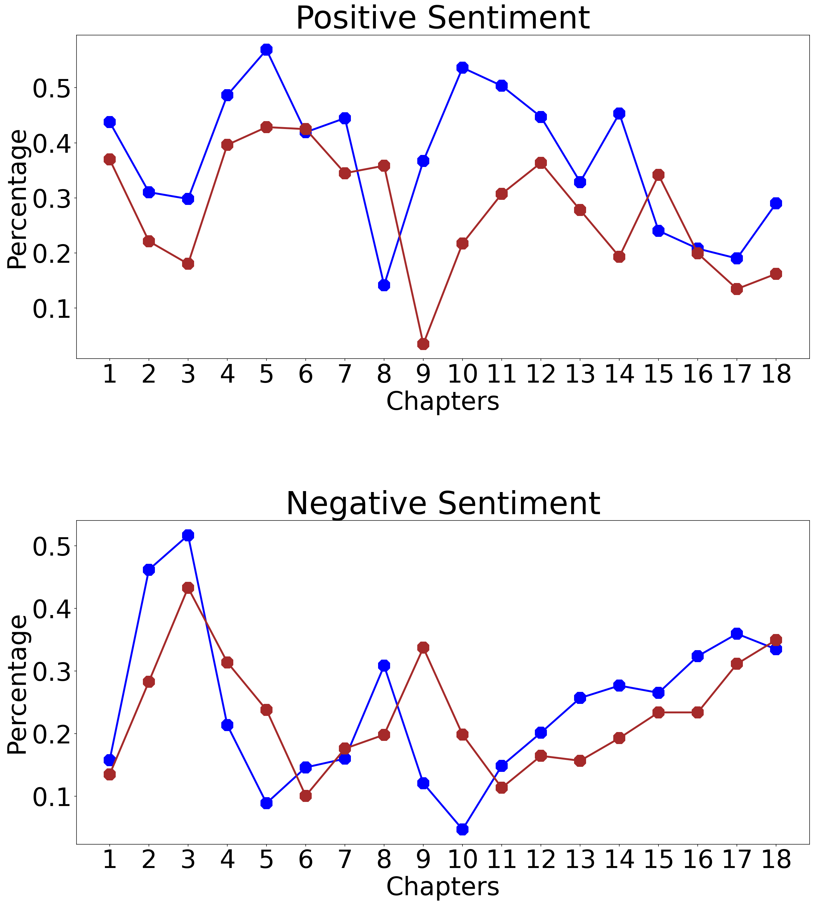
# abcd = get_word_sentiment_per_part(bibek_chapters, no_of_parts = 18)import nltk
nltk.download('vader_lexicon')
from nltk.sentiment.vader import SentimentIntensityAnalyzer
sid = SentimentIntensityAnalyzer()[nltk_data] Downloading package vader_lexicon to
[nltk_data] /home/yasaswi/nltk_data...sid.polarity_scores('happy good'){'neg': 0.0, 'neu': 0.0, 'pos': 1.0, 'compound': 0.765}def get_sentiment_scores(text_list):
"""
This function plots the similarity in a bar chart format
Parameters
----------
text_list : list
List of sentences
Returns
-------
res :
Returns the normalised VADER sentiment scores
Scores are normalised by dividing scores per chapter with the
no of sentences per chapter
"""
sentiment_scores_neg = 0.0
sentiment_scores_pos = 0.0
sentiment_scores_neu = 0.0
sentiment_scores_compound = 0.0
for sentence in text_list:
res = sid.polarity_scores(sentence)
sentiment_scores_neg += res['neg']
sentiment_scores_pos += res['pos']
sentiment_scores_neu += res['neu']
sentiment_scores_compound += res['compound']
sentiment_scores_neg = round(sentiment_scores_neg * 100 / len(text_list), 3)
sentiment_scores_pos = round(sentiment_scores_pos * 100 / len(text_list), 3)
sentiment_scores_neu = round(sentiment_scores_neu * 100 / len(text_list), 3)
sentiment_scores_compound = round(sentiment_scores_compound * 100 / len(text_list), 3)
res = sentiment_scores_neg, sentiment_scores_pos, sentiment_scores_neu, sentiment_scores_compound,
return res# Get VADER scores for Ganguli's Translation
ganguli_scores_neg = []
ganguli_scores_pos = []
ganguli_scores_neu = []
ganguli_scores_compound = []
for ch, text in ganguli_chapters.items():
a,b,c,d = get_sentiment_scores(text)
ganguli_scores_neg.append(a)
ganguli_scores_pos.append(b)
ganguli_scores_neu.append(c)
ganguli_scores_compound.append(d)# Get VADER scores for Bibek's Translation
bibek_scores_neg = []
bibek_scores_pos = []
bibek_scores_neu = []
bibek_scores_compound = []
for ch, text in bibek_chapters.items():
a,b,c,d = get_sentiment_scores(text)
bibek_scores_neg.append(a)
bibek_scores_pos.append(b)
bibek_scores_neu.append(c)
bibek_scores_compound.append(d)# Plot chapterwise sentiments of both Ganguli and Bibek translations
# using VADER sentiment scores
font_size = 40
legend_size = 30
title_size = 50
fig, ax = plt.subplots(2, figsize=(18, 20))
axis_index = 0
ax[axis_index].set_title(f'Positive Sentiment - VADER', fontsize = title_size)
ax[axis_index].plot(np.arange(1,19), np.array(ganguli_scores_pos)/100, color = 'blue', marker='8', label = f'FT-1 Positive',
linewidth = 3, markersize=20, linestyle = '-')
ax[axis_index].plot(np.arange(1,19), np.array(bibek_scores_pos)/100, color = 'brown', marker='8', label = f'FT-2 Positive',
linewidth = 3, markersize=20, linestyle = '-')
ax[axis_index].set_xticks(np.arange(1,19))
ax[axis_index].set_xticklabels(np.arange(1,19), fontsize = font_size)
ax[axis_index].set_xlabel('Chapters', fontsize = font_size)
ax[axis_index].set_ylabel('Percentage', fontsize = font_size)
ax[axis_index].tick_params(axis='both', which='major', labelsize= font_size)
axis_index = 1
ax[axis_index].set_title(f'Negative Sentiment - VADER', fontsize = title_size)
ax[axis_index].plot(np.arange(1,19), np.array(ganguli_scores_neg)/100, color = 'blue', marker='8', label = f'FT-1 Positive',
linewidth = 3, markersize=20, linestyle = '-')
ax[axis_index].plot(np.arange(1,19), np.array(bibek_scores_neg)/100, color = 'brown', marker='8', label = f'FT-2 Positive',
linewidth = 3, markersize=20, linestyle = '-')
ax[axis_index].set_xticks(np.arange(1,19))
ax[axis_index].set_xticklabels(np.arange(1,19), fontsize = font_size)
ax[axis_index].set_xlabel('Chapters', fontsize = font_size)
ax[axis_index].set_ylabel('Percentage', fontsize = font_size)
ax[axis_index].tick_params(axis='both', which='major', labelsize= font_size)
plt.tight_layout()
fig.subplots_adjust(hspace=.5)
plt.savefig('valer-sentiment.jpg')
plt.show()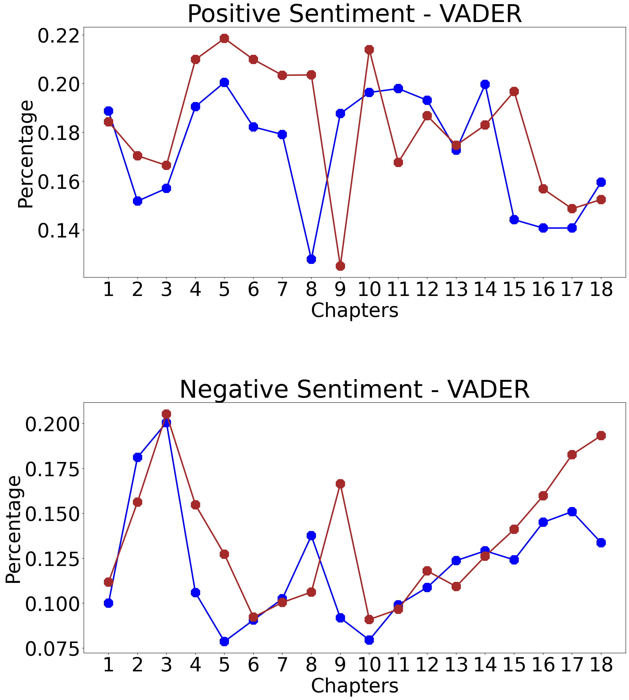
def get_word_emotion_intensity_lexicon(emotions, emotion_intensity_file_path):
emotion_lexicon = []
word_intensities = {'anger':dict(),
'anticipation':dict(),
'disgust':dict(),
'fear':dict(),
'joy':dict(),
'sadness':dict(),
'surprise':dict(),
'trust':dict()}
with open(emotion_intensity_file_path) as file:
for line in file:
word_int_array = line.replace("\n", "").split("\t")
emotion = word_int_array[1]
emotion_lexicon.append(word_int_array[0])
if emotion not in word_intensities.keys():
continue
word_intensities[emotion][word_int_array[0]] = float(word_int_array[2])
return word_intensities, emotion_lexicondef get_emotion_intensity(text):
"""
This function extracts the emotion intensities from text
Parameters
----------
text : str
string from which emotion intensities are to be calculated
Returns
-------
res :
Returns the emotion intensity scoress - actual and normalised
scores of all emotions calculated using text
"""
emotions_word_count = np.zeros(shape = (len(emotions)))
emotions_intensity = np.zeros(shape = (len(emotions)))
wc = 0
for word in text.split():
wc += 1
lemm_word = lemmatize_word(word)
if word in emotion_lexicon:
target = word
elif lemm_word in emotion_lexicon:
target = lemm_word
else:
continue
if target in word_intensities['anger'].keys():
emotions_intensity[0] += word_intensities['anger'][target]
emotions_word_count[0]+=1
if target in word_intensities['anticipation'].keys():
emotions_intensity[1] += word_intensities['anticipation'][target]
emotions_word_count[1]+=1
if target in word_intensities['disgust'].keys():
emotions_intensity[2] += word_intensities['disgust'][target]
emotions_word_count[2]+=1
if target in word_intensities['fear'].keys():
emotions_intensity[3] += word_intensities['fear'][target]
emotions_word_count[3]+=1
if target in word_intensities['joy'].keys():
emotions_intensity[4] += word_intensities['joy'][target]
emotions_word_count[4]+=1
if target in word_intensities['sadness'].keys():
emotions_intensity[5] += word_intensities['sadness'][target]
emotions_word_count[5]+=1
if target in word_intensities['surprise'].keys():
emotions_intensity[6] += word_intensities['surprise'][target]
emotions_word_count[6]+=1
if target in word_intensities['trust'].keys():
emotions_intensity[7] += word_intensities['trust'][target]
emotions_word_count[7]+=1
res = emotions_intensity, emotions_intensity / emotions_word_count
return resword_intensities, emotion_lexicon = get_word_emotion_intensity_lexicon(emotions, emotion_intensity_file_path)# Get Emotion Intensity scores of the two full translations of the Epic
res3, res_norm3 = get_emotion_intensity(mb_full_1_str)
res4, res_norm4 = get_emotion_intensity(mb_full_2_str)Plot Emotion Intensity scores of full translations of the Epic - Full Translation 1 vs Full Translation 2
df = pd.DataFrame([res3, res4],
columns = emotions, index = ['Full-1', 'Full-2',]).round(2).T
df['Emotions'] = df.index
font_size = 35
g = df.plot(x = 'Emotions',
kind = 'bar',
stacked = False,
figsize = (25, 10),
rot = 0,
fontsize = font_size,
width = 0.7
)
legend_properties = {'weight':'bold'}
g.legend(bbox_to_anchor=(1, 1), fontsize = font_size)
plt.xlabel('Emotions' , fontsize = font_size,)
plt.ylabel('Intensity Score', fontsize = font_size, )
g.tick_params(axis='x', which = 'major', labelsize = font_size, rotation = 20)
g.tick_params(axis='y', which = 'major', labelsize = font_size)
plt.title(label = 'Total Emotion Intensity in four translations of the Mahabharata',
size = font_size, **{'fontname':'sans-serif', 'fontweight': '649'})
# plt.ylim(0,65)
plt.tight_layout()
plt.savefig('Emotion Intensities.jpg')
plt.show()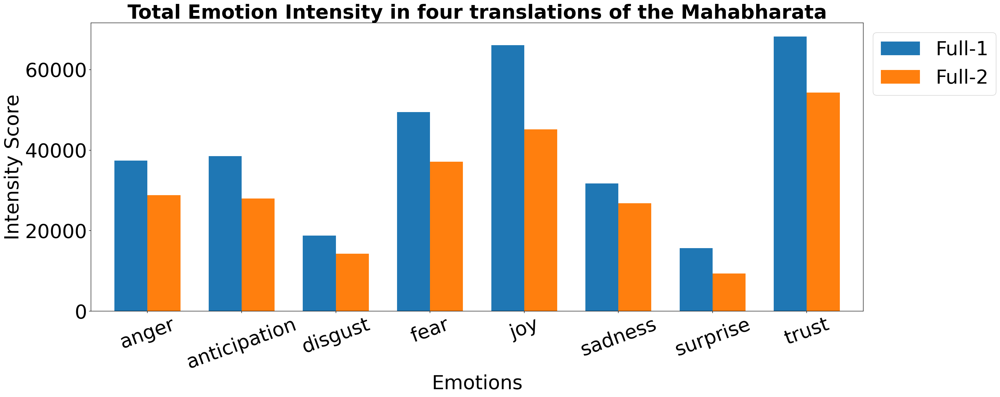
def get_emotion_intensity(text):
"""
This function returns emotion intensities from the text.
Parameters
----------
text : str
string from which emotion intensities are to be calculated
Returns
-------
res :
Returns the emotion intensity scoress - actual and normalised
scores of all emotions calculated using text
"""
emotions_word_count = np.zeros(shape = (len(emotions)))
emotions_intensity = np.zeros(shape = (len(emotions)))
wc = 0
for word in text.split():
wc += 1
lemm_word = lemmatize_word(word)
if word in emotion_lexicon:
target = word
elif lemm_word in emotion_lexicon:
target = lemm_word
else:
continue
if target in word_intensities['anger'].keys():
emotions_intensity[0] += word_intensities['anger'][target]
emotions_word_count[0]+=1
if target in word_intensities['anticipation'].keys():
emotions_intensity[1] += word_intensities['anticipation'][target]
emotions_word_count[1]+=1
if target in word_intensities['disgust'].keys():
emotions_intensity[2] += word_intensities['disgust'][target]
emotions_word_count[2]+=1
if target in word_intensities['fear'].keys():
emotions_intensity[3] += word_intensities['fear'][target]
emotions_word_count[3]+=1
if target in word_intensities['joy'].keys():
emotions_intensity[4] += word_intensities['joy'][target]
emotions_word_count[4]+=1
if target in word_intensities['sadness'].keys():
emotions_intensity[5] += word_intensities['sadness'][target]
emotions_word_count[5]+=1
if target in word_intensities['surprise'].keys():
emotions_intensity[6] += word_intensities['surprise'][target]
emotions_word_count[6]+=1
if target in word_intensities['trust'].keys():
emotions_intensity[7] += word_intensities['trust'][target]
emotions_word_count[7]+=1
res = (emotions_intensity, emotions_intensity / emotions_word_count)
return resdef get_chapterwise_emotion_intensities(text_chapterwise):
"""
This function returns chapterwise intensities the similarity in a bar chart format
Parameters
----------
text : str
string from which emotion intensities are to be calculated
Returns
-------
res :
Returns the emotion intensity scoress - actual and normalised
scores of all emotions calculated using text
"""
res = []
for i in range(1, 19):
a = get_emotion_intensity(' '.join(text_chapterwise[i]))[1]
res.append(a)
return res
def extract_emotion_intensity(chapterwise_emotions, emotion):
"""
This function plots the similarity in a bar chart format
Parameters
----------
text : str
string from which emotion intensities are to be calculated
Returns
-------
res :
Returns the emotion intensity scoress - actual and normalised
scores of all emotions calculated using text
"""
index = {'anger': 0, 'anticipation': 1, 'disgust': 2, 'fear': 3, 'joy': 4, 'sadness': 5, 'surprise': 6, 'trust': 7}
res = []
for emotion_list in chapterwise_emotions:
res.append(emotion_list[index[emotion]])
return np.array(res)ganguli_chapterwise_emotions = get_chapterwise_emotion_intensities(ganguli_chapters)bibek_chapterwise_emotions = get_chapterwise_emotion_intensities(bibek_chapters)Chapterwise Emotion Intensity of Anger, Disgust, Fear and Sadness
# plt.figure(figsize=(6, 4))
font_size = 30
legend_size = 30
title_size = 40
fig, ax = plt.subplots(4, figsize=(14, 25))
axis_index = 0
axes = [0, 2, 3, 5] # index positions of Anger, Disgust, Fear and Sadness
for axis_index, i, in enumerate(axes):
text1 = extract_emotion_intensity(ganguli_chapterwise_emotions, emotions[i])
text2 = extract_emotion_intensity(bibek_chapterwise_emotions, emotions[i])
ax[axis_index].plot(np.arange(1,19), text2, color = 'blue', marker='o', label = f'FT1-{emotions[i]}', linewidth =3,
markersize=20, linestyle = '-')
ax[axis_index].plot(np.arange(1,19), text1, color = 'brown', marker='o', label = f'FT1-{emotions[i]}', linewidth =3,
markersize=20, linestyle = '-')
ax[axis_index].set_title(f'"{emotions[i].title()}" Intensity ', fontsize = title_size)
ax[axis_index].set_xticks(np.arange(1,19))
ax[axis_index].set_xticklabels(np.arange(1,19), fontsize = font_size)
ax[axis_index].set_yticklabels(np.arange(0.0, 0.9, 0.1, dtype = np.float32), fontsize = font_size, )
ax[axis_index].set_xlabel('Chapters', fontsize = font_size)
ax[axis_index].set_ylabel('Emotion Intensity', fontsize = font_size)
# legend = ax[axis_index].legend(loc='best', shadow=True, fontsize = legend_size)
plt.tight_layout()
fig.subplots_adjust(hspace=.5)
plt.savefig('negative_emotions.jpg')
plt.show()UserWarning: FixedFormatter should only be used together with FixedLocator
ax[axis_index].set_yticklabels(np.arange(0.0, 0.9, 0.1, dtype = np.float32), fontsize = font_size, )
<ipython-input-60-56a6fdb1e5c6>:20: UserWarning: FixedFormatter should only be used together with FixedLocator
ax[axis_index].set_yticklabels(np.arange(0.0, 0.9, 0.1, dtype = np.float32), fontsize = font_size, )
<ipython-input-60-56a6fdb1e5c6>:20: UserWarning: FixedFormatter should only be used together with FixedLocator
ax[axis_index].set_yticklabels(np.arange(0.0, 0.9, 0.1, dtype = np.float32), fontsize = font_size, )
<ipython-input-60-56a6fdb1e5c6>:20: UserWarning: FixedFormatter should only be used together with FixedLocator
ax[axis_index].set_yticklabels(np.arange(0.0, 0.9, 0.1, dtype = np.float32), fontsize = font_size, )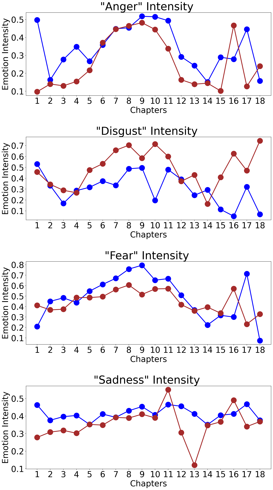
Chapterwise Emotion Intensity of Anticipation, Joy, Surprise and Trust
# plt.figure(figsize=(6, 4))
font_size = 30
legend_size = 30
title_size = 40
fig, ax = plt.subplots(4, figsize=(14, 25))
axis_index = 0
a = [1, 4, 6, 7] # index positions of anticipation, joy, surprise and trust
for axis_index, i, in enumerate(a):
text2 = extract_emotion_intensity(bibek_chapterwise_emotions, emotions[i])
text1 = extract_emotion_intensity(ganguli_chapterwise_emotions, emotions[i])
ax[axis_index].plot(np.arange(1,19), text2, color = 'blue', marker='o', label = f'FT1-{emotions[i]}', linewidth =3,
markersize=20, linestyle = '-')
ax[axis_index].plot(np.arange(1,19), text1, color = 'brown', marker='o', label = f'FT1-{emotions[i]}', linewidth =3,
markersize=20, linestyle = '-')
ax[axis_index].set_title(f'"{emotions[i].title()}" Intensity ', fontsize = title_size)
ax[axis_index].set_xticks(np.arange(1,19))
ax[axis_index].set_xticklabels(np.arange(1,19), fontsize = font_size)
ax[axis_index].set_yticklabels(np.arange(0.0, 0.9, 0.1, dtype = np.float32), fontsize = font_size, )
ax[axis_index].set_xlabel('Chapters', fontsize = font_size)
ax[axis_index].set_ylabel('Emotion Intensity', fontsize = font_size)
# legend = ax[axis_index].legend(loc='best', shadow=True, fontsize = legend_size)
plt.tight_layout()
fig.subplots_adjust(hspace=.5)
plt.savefig('positive_emotions.jpg')
plt.show()UserWarning: FixedFormatter should only be used together with FixedLocator
ax[axis_index].set_yticklabels(np.arange(0.0, 0.9, 0.1, dtype = np.float32), fontsize = font_size, )
<ipython-input-61-927b2cae210f>:20: UserWarning: FixedFormatter should only be used together with FixedLocator
ax[axis_index].set_yticklabels(np.arange(0.0, 0.9, 0.1, dtype = np.float32), fontsize = font_size, )
<ipython-input-61-927b2cae210f>:20: UserWarning: FixedFormatter should only be used together with FixedLocator
ax[axis_index].set_yticklabels(np.arange(0.0, 0.9, 0.1, dtype = np.float32), fontsize = font_size, )
<ipython-input-61-927b2cae210f>:20: UserWarning: FixedFormatter should only be used together with FixedLocator
ax[axis_index].set_yticklabels(np.arange(0.0, 0.9, 0.1, dtype = np.float32), fontsize = font_size, )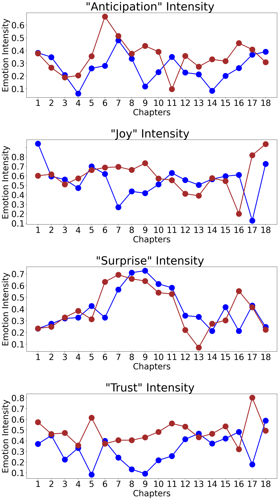